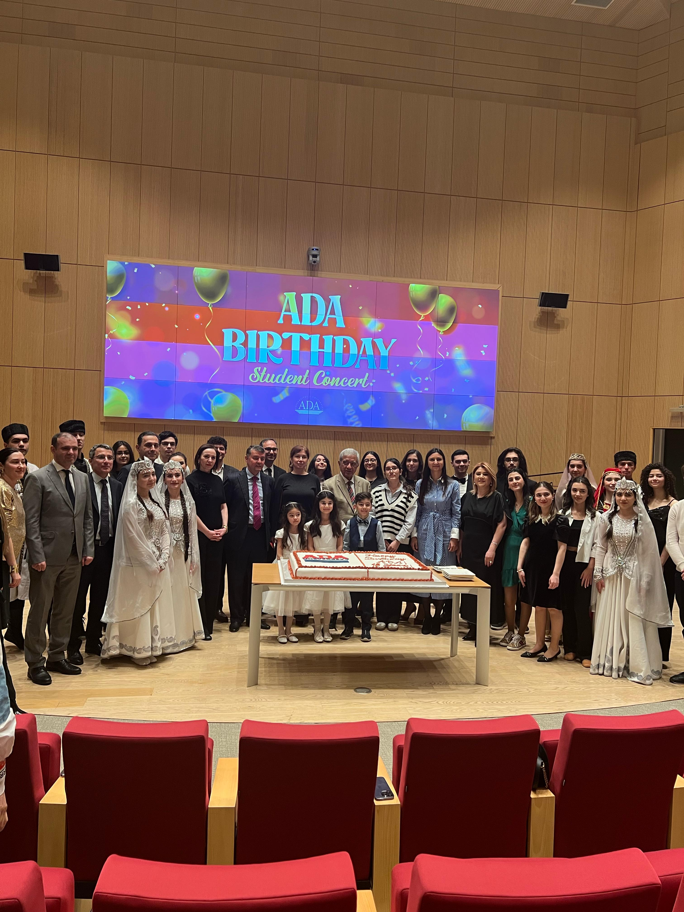
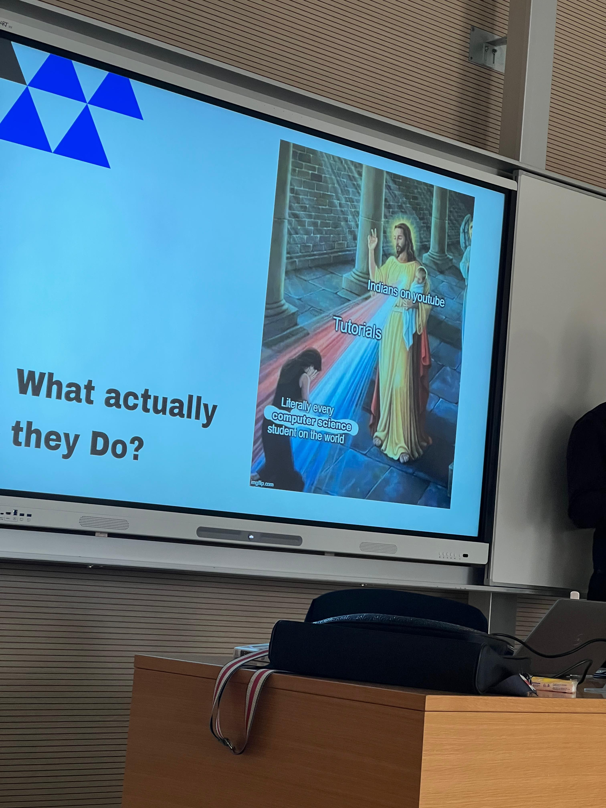
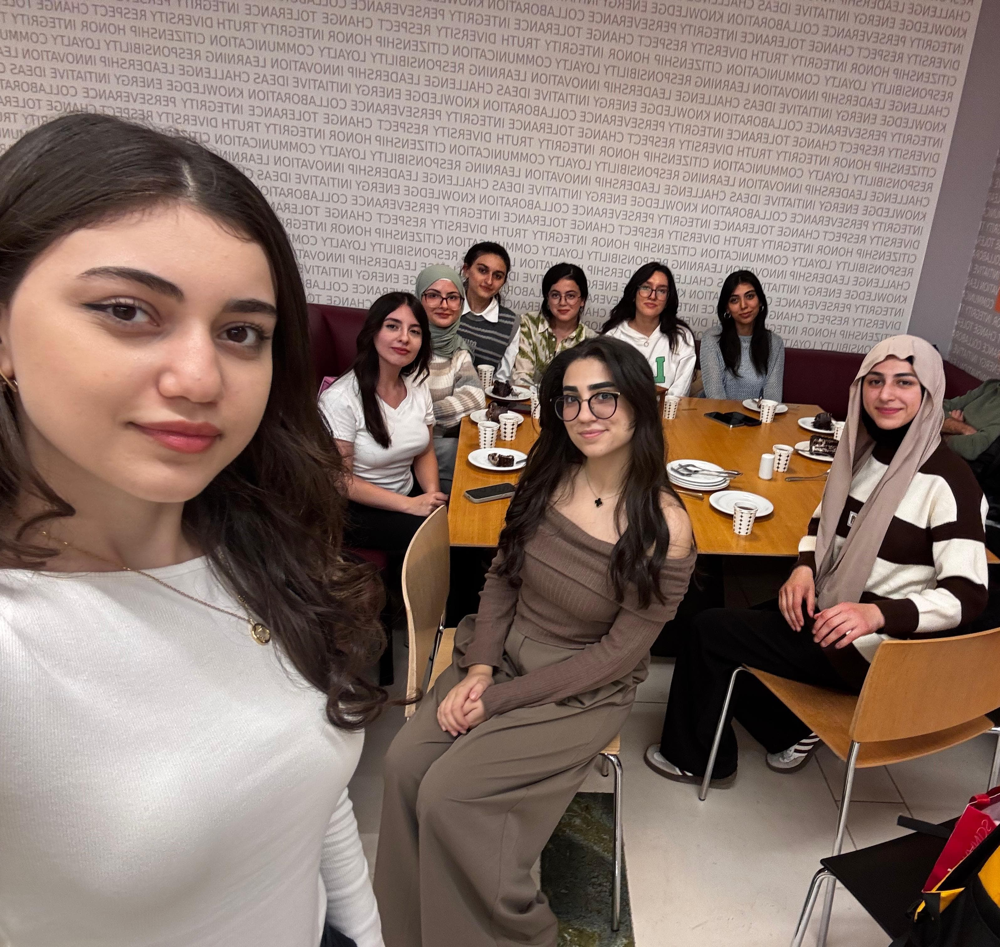
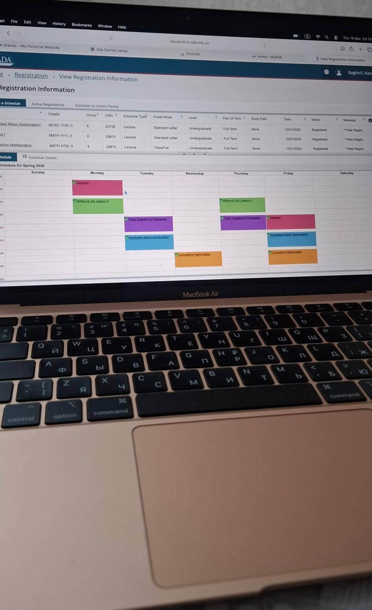
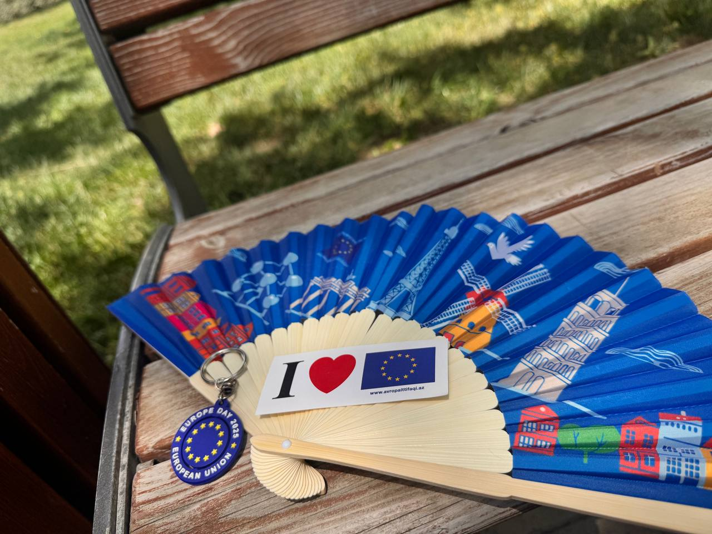

Snapshots of Life
A glimpse into every moment

More than a community; it’s a space where individuality is valued and togetherness is felt 💓

Informative lectures by a disciplined instructor who teaches us far beyond the classroom 🌏

Funny lectures, funny instructors, great memories ⭐️

My Beautiful Girls University wouldn’t feel the same without them. From stress to laughter, they turn ordinary days into memories I’ll always carry with me 🌸
An amazing campus with gorgeous nature 🌿
Closing one chapter, opening another

The most anxious moment at ADA (the lucky ones pass the course 🥸)

An International Event That Brought Cultures Together🌏🌸
Feel free to reach out on Instagram.
You can find me on Instagram if you’d like to connect.
Get In Touch